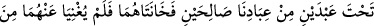

Sertlik ve yumuşaklık birlikte güzeldir eyâ
Cerrâh olan hem yaralar hem de ilâç koyar yaraya
Burada mü’minin cemâl, celâl sıfatı ve kemâl değeri olduğuna işâret olunmaktadır.
Muâmelelerin ilki cemâldir. Çünkü Allah Teâlâ’nın rahmeti gazabından önceliklidir.
Sonra celâl muâmelesi gelir. Kâfirler İslâm dâvetini yumuşaklıkla ve rıfk ile kabûl
etmediklerinden, münâfıklar ise ihlâs ve yakîni kabûl etmediklerinden celâl sıfatıyla
muâmele görürler. Bundan dolayı Allah Teâlâ peygamberine karşılıklı isimlerinin
hükümleri ortaya çıksın diye sert ve katı davranmayı emretmiştir.
Bu âyet-i kerîmede rahmet için yaratılan insanlar; yâni mü’minlere gazab edilmemesi,
kızılmaması gerektiğine, onlara kaba davranılmaması gerektiğine işâret vardır. Çünkü
mü’mine gazabla ve katı davranmak hikmeti tersine çevirmek, maslahatı başaşağı
döndürmek demektir. Mahlûkatın içerisinde gazaba lâyık olanlar da vardır. Onlar
kâfirler ve münâfıklardır, bunlara merhamet olunmaz, yumuşak davranılmaz. Aynı
sebeple bu gruba bid’atçiler de dâhildirler. Bu sebeple ehl-i sünnete mensûb olan
birisinin bid’atçiye güler yüzle davranması câiz değildir. Allah Teâlâ böyle
davrananların bir kısmını azarlamıştır. Şu halde mü’mine düşen hak yolda düşmanların
hîlelerini savuşturuncaya, şeytanların tuzaklarını zâhirî ve bâtınî olarak defedinceye
kadar çalışmak, çaba sarfetmektir. Mü’min bu hareketine böylece devam etmelidir.
Çünkü insana mahsûs olan özelliklerden terakkî; yâni ilerleme ancak bununla
sağlanabilir. İşte bu sebepten ötürü cihâd insanlara ve cinlere mahsûs kılınmıştır.
Meleklerin cihâdı ise insanlara tâbî olarak ya da müslümanların sayılarını arttırarak
gerçekleşir. Anla!
10. Allah, inkâr edenlere, Nûh’un karısı ile Lût’un karısını misâl verdi. Bu ikisi,
kullarımızdan iki sâlih kişinin nikâhları altında iken onlara hâinlik ettiler. Kocaları
Allah’tan gelen hiçbir şeyi onlardan savamadı. Onlara: Haydi, ateşe girenlerle
beraber siz de girin! denildi.
“Allah, inkâr edenlere, Nûh’un karısı ile Lût’un karısını misâl verdi.” Âyetin
deyimiyle “darbu’l-misâl”, bu gibi durumlarda tuhaf bir hâlin, onun sâyesinde aynı
tuhaflık husûsunda kendisine benzeyen bir başka hale benzerliğinin bilinmesi için örnek
olarak gösterilmesidir. Buna göre Allah Teâlâ kâfirlerin şu andaki ve ilerideki
durumları için bir misâl göstermiştir. Buna göre Allah Teâlâ Nûh’un karısı ile Lût’un
karısının durumlarını misâl olarak göstermiştir. Böylece o kâfirlerin durumu da ortaya